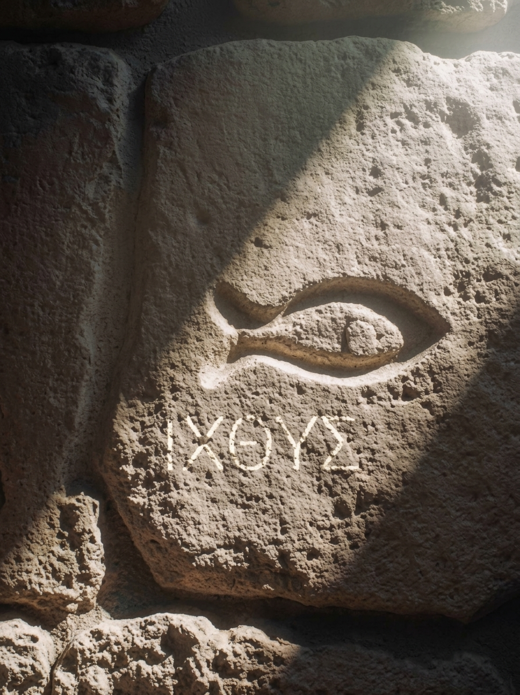

Etiquetas:
[TEXTO] = lo que dice el pasaje;
[HISTÓRICO] = hecho del contexto;
[ACADÉMICO] = posición de la investigación;
[TRADICIÓN] = lectura transmitida;
[ESPECULACIÓN] = inferencia nuestra.
[TEXTO] El término hebreo habitual es דָּג (dāg), "pez", con forma femenina colectiva דָּגָה (dāgâ), que aparece en expresiones como דְּגַת הַיָּם (dəgat hayyām), "los peces del mar" (Gn 1:26, 28). El pescador es דַּיָּג (dayyāg) y el verbo "pescar" es דוּג (dûg); en Jer 16:16 aparecen ambos juntos: דַּיָּגִים (dayyāgîm, "pescadores") y וְדִגוּם (wədāgûm, "y los pescarán").
[TEXTO] Los instrumentos tienen nombre propio: חַכָּה (ḥakkâ, anzuelo, Hab 1:15), חֶרֶם (ḥerem, red, Hab 1:15-17) y מִכְמֹרֶת (mikmeret, red, Hab 1:15-16).
[ACADÉMICO] En arameo "pez" es nûn(ā), el mismo sustantivo del nombre Nun (Jos 1:1). Que el nombre de la letra nun derive de "pez" se propone a menudo, pero es discutido. No hay base para construir sobre ello un simbolismo. NO VERIFICADO el detalle filológico fino.
[TEXTO] Vocabulario principal (usos detallados en las Partes 2 a 5):
[ACADÉMICO] La distinción entre red de arrastre, de lanzar y de enredar corresponde a técnicas reales de pesca en el lago. Que cada término del NT calce exactamente con una técnica concreta es una inferencia razonable, pero NO VERIFICADA aquí.
[TEXTO] וַיִּבְרָא אֱלֹהִים אֶת־הַתַּנִּינִם הַגְּדֹלִים (wayyivrā' ʼĕlōhîm ʼet-hattannînim haggədōlîm): "Y creó Dios los grandes monstruos marinos" (Gn 1:21). Los peces nacen del mandato divino y reciben bendición (1:22). En 1:26 y 1:28 la humanidad recibe וְיִרְדּוּ (wîrdû), "y dominen", sobre dəgat hayyām. Tras el diluvio, los peces son "entregados en vuestra mano" (Gn 9:2).
[ACADÉMICO] Gn 1 se atribuye comúnmente a la tradición sacerdotal. El verbo rādâ ("dominar") se discute: dominio como cuidado vice-regio, o dominio como señorío sin más. NO VERIFICADO el estado actual del debate.
[TEXTO] Contraste importante: el pez es aquí un objeto de dominio humano, no un sujeto simbólico. La imagen es inversa a la de Hab 1, donde los humanos son "como peces".
[TEXTO] וּדְגֵי הַיָּם עֹבֵר אָרְחוֹת יַמִּים (ûdəgê hayyām 'ōbēr 'orḥôt yammîm): "los peces del mar, que recorren las sendas de los mares". [TEXTO] Hebreos 2:6-8 cita el Salmo 8, aunque sin llegar a la mención de los peces. Es una intertextualidad de fondo (Cristo como cumplimiento del dominio humano), no un uso del pez como símbolo.
[TEXTO] El criterio: סְנַפִּיר וְקַשְׂקֶשֶׂת (sənappîr wəqaśqeśet), "aletas y escamas". Lo que no las tiene es שֶׁקֶץ (šeqeṣ), "abominación" (v. 10-12).
[HISTÓRICO] El Mar de Galilea contiene especies con escamas (por ejemplo tilapias y barbos, según estudios ictiológicos) y bagres sin escamas. [ESPECULACIÓN] Se infiere que pescadores judíos clasificarían la pesca en limpia e inmunda, y no vender o comer lo segundo. El NT no lo dice, así que es inferencia nuestra. NO VERIFICADA la identificación de especies.
[TRADICIÓN] La lectura adventista sostiene la vigencia de la distinción como principio de salud. Es una lectura, no una afirmación de los textos evangélicos, que no comentan la clasificación de los peces. Se retoma en la Parte 7.
[TEXTO] וַיְמַן יְהוָה דָּג גָּדוֹל לִבְלֹעַ אֶת־יוֹנָה (wayəman YHWH dāg gādôl liḇlōa' 'et-yônâ): "Y designó el SEÑOR un gran pez para que se tragara a Jonás". El verbo mānâ ("designar, disponer") subraya la soberanía de Dios sobre la criatura.
[TEXTO] El hebreo dice dāg, y no "ballena". La LXX traduce κῆτος μέγα (kêtos méga), y Mt 12:40 usa kêtos. Este hilo, que es el más importante para el NT, se trabaja en la Parte 5.
[TEXTO] Del umbral del templo brota un río que sanea el Mar Muerto: וְהָיָה דָּגָה רַבָּה מְאֹד (wəhāyâ dāgâ rabbâ mə'ōd), "y habrá peces en gran abundancia" (v. 9). Los pescadores se situarán desde En-gadi hasta En-eglaim, "lugar para tender redes" (mištôaḥ laḥărāmîm, v. 10), y habrá peces "según su especie, como los peces del Mar Grande" (v. 10).
[ACADÉMICO] Es imagen escatológica de vida restaurada por la presencia divina. Su eco en el Apocalipsis (Ap 22:1-2) es de río y árbol, no de peces. La posible conexión de Ez 47 con Jn 21 (la pesca abundante) es una hipótesis sugerente pero debatida; se evalúa en la Parte 4. [ESPECULACIÓN] No hay cita ni alusión explícita demostrable.
[TEXTO] הִנְנִי שֹׁלֵחַ לְדַוָּגִים רַבִּים ... וְדִגוּם (hinənî šōlēaḥ ləḏayyāgîm rabbîm ... wəḏāgûm): "He aquí envío muchos pescadores ... y los pescarán". A continuación vienen los cazadores (ṣayyādîm) que los perseguirán por montes y collados.
[TEXTO] El contexto inmediato (16:10-13, 17-18) es de castigo por la idolatría, aunque 16:14-15 anuncia un segundo éxodo. [ACADÉMICO] Los comentaristas discuten si los "pescadores" son agentes del juicio, de la restauración o de ambos. Se mantiene abierto el debate y se vuelve a él en la Parte 2, porque determina cómo se lee Mr 1:17.
[TEXTO] Hab 1:14: וַתַּעֲשֶׂה אָדָם כִּדְגֵי הַיָּם (wattaʻăśeh ʼādām kidgê hayyām), "Y haces a los hombres como los peces del mar". El invasor babilonio los sube con anzuelo, los arrastra con ḥerem y los recoge en mikmeret, y luego ofrece sacrificios a sus redes (v. 16).
[TEXTO] Amós 4:2 anuncia que serán llevados "con ganchos" y "con anzuelos de pescar" (sirôt dûgâ); el texto hebreo es difícil. Ver también Ez 29:4-5 (anzuelos en las quijadas del faraón).
[ACADÉMICO] Patrón: en el AT la imagen de "pescar personas" suele ser de juicio o captura hostil. El uso de Jesús en los Evangelios la resignifica, y hasta qué punto la reorienta es una pregunta que se trata en la Parte 2.
[HISTÓRICO] El Mar de Galilea (lago de Genesaret, Lc 5:1) mide aproximadamente 21 km de largo por 13 de ancho y está unos 200 m bajo el nivel del mar. Era base de una industria importante, con pueblos en su orilla: Cafarnaúm, Betsaida, Magdala, Tiberias. NO VERIFICADAS las cifras exactas.
[HISTÓRICO] Magdala se identifica comúnmente con Tarichaeae, nombre griego que alude a τάριχος (táricos, pescado salado). Eso sugiere procesamiento de pescado, aunque la identificación se discute en detalle.
[TEXTO] El NT muestra que la pesca era empresa familiar y comercial. Zebedeo tiene jornaleros (μισθωτοί, misthōtoí, Mr 1:20) y Simón y los hijos de Zebedeo son socios (κοινωνοί, koinōnoí, Lc 5:10). Eso encaja con un oficio de cierta solvencia, no de indigencia, aunque dependiente de permisos y tasas.
[ACADÉMICO] Estudios sobre la economía pesquera galilea (se citan en esta línea Mendel Nun y K. C. Hanson) discuten el grado de control de Herodes Antipas y el sistema de arrendamiento y tributo. El detalle de ese debate queda como NO VERIFICADO y se retoma en la Parte 2.
[HISTÓRICO] En 1986, durante una sequía, apareció en la orilla cerca de Ginosar un casco de barco de entre el siglo I a. C. y el siglo I d. C. (el "barco de Galilea", de unos 8 m). Es un ejemplo de tipo de embarcación, no evidencia de que sea de ningún personaje bíblico. NO VERIFICADOS los datos precisos.
[HISTÓRICO] Josefo describe la región del lago de Genesaret en Guerra de los judíos libro 3 (alrededor de 3.506-521, NO VERIFICADO el rango exacto), con elogios de su fertilidad y mención de la variedad de peces.
[HISTÓRICO] Hay un culto sirio de la diosa Atargatis con estanques de peces sagrados (se cita De dea Syria de Luciano, NO VERIFICADO el pasaje), y el dios Dagón de los filisteos se explicó antiguamente como "dios-pez". [ACADÉMICO] La investigación mayoritaria deriva Dagón de dgn ("grano"), de modo que el vínculo con dāg es etimología popular. NO VERIFICADO.
[ESPECULACIÓN] Resulta tentador explicar el pez cristiano a partir de esos cultos. No hay evidencia que lo respalde, y se menciona solo para advertir contra esa conexión. El símbolo cristiano, cuando aparezca (Parte 6), tiene su explicación más sencilla en el acróstico y en la tradición bautismal.
Remisiones: las metáforas de llamamiento se trabajan en la Parte 2; opsárion y las multiplicaciones en la Parte 3; la red de Jn 21 en la Parte 4; la parábola de la red y Jonás en la Parte 5; el acróstico ΙΧΘΥΣ y la imagen subida en la Parte 6.
Personajes mencionados (para la clasificación final de la Parte 7): Jonás, Zebedeo, Herodes Antipas, Josefo, Simón, los hijos de Zebedeo.
| Estado | Dato | Fuente |
|---|---|---|
| Verificado contra el texto bíblico (de memoria, sin cotejo web) | Formas hebreas de Gn 1:26, Sal 8:8, Jer 16:16, Hab 1:14-17, Ez 47:9-10, Jon 1:17; términos griegos y sus pasajes (opsarion solo en Juan; sagēnē solo en Mt 13:47; misthōtoi Mr 1:20; koinōnoi Lc 5:10) | Texto bíblico (TM, NA, LXX); NO cotejado con edición crítica en esta sesión |
| NO VERIFICADO | Bibliografía (Nun, Hanson); rango de Josefo; pasaje de Luciano; dimensiones del barco de Ginosar; cifras del lago; especies del lago; identificación Magdala/Tarichaeae; estado del debate sobre rādâ; Dagón y dgn | Pendiente de búsqueda web |
| Corregido | Numeración de Jonás: Jon 1:17 (inglés) corresponde a 2:1 en el TM; "ballena" no está en el hebreo (dāg gādôl) | Texto bíblico, TM y LXX |
| Marcado como inferencia | Clasificación de la pesca en limpia/inmunda por los pescadores galileos; conexión Ez 47 y Jn 21; vínculo con cultos de Atargatis/Dagón | [ESPECULACIÓN], no hay texto que lo afirme |
Nota de extensión: esta parte cubre su contenido con fuentes de memoria y varias reservas. Si prefieres una versión con los datos NO VERIFICADOS ya confirmados por búsqueda web, dímelo y los verifico antes de seguir.
Verificación: en esta parte sí usé búsqueda web (ver tabla final). Etiquetas: [TEXTO], [HISTÓRICO], [ACADÉMICO], [TRADICIÓN], [ESPECULACIÓN]. El léxico general del pez y la pesca está en la Parte 1; aquí no se repite.
[TEXTO] Marcos sitúa la escena después del arresto de Juan y del resumen de la predicación de Jesús (Mr 1:14-15: μετανοεῖτε καὶ πιστεύετε ἐν τῷ εὐαγγελίῳ, metanoeite kai pisteuete en tō euangeliō, «arrepentíos y creed en el evangelio»). El primer acto de Jesús tras ese resumen es reunir gente. [TEXTO] Mateo conserva el esquema de dos parejas de hermanos (Simón y Andrés; Santiago y Juan), con la diferencia de que dice que Jesús «caminaba» (περιπατῶν, peripatōn) junto al mar, mientras Marcos dice «pasando» (παράγων, paragōn).
[TEXTO] Fórmula central en Marcos: δεῦτε ὀπίσω μου, καὶ ποιήσω ὑμᾶς γενέσθαι ἁλιεῖς ἀνθρώπων (deute opisō mou, kai poiēsō hymas genesthai halieis anthrōpōn): «Venid en pos de mí, y haré que lleguéis a ser pescadores de hombres» (Mr 1:17). [TEXTO] Mateo la reproduce casi igual, pero sin el verbo genesthai («llegar a ser»): ποιήσω ὑμᾶς ἁλιεῖς ἀνθρώπων (Mt 4:19).
[TEXTO] Respuesta: εὐθὺς ἀφέντες τὰ δίκτυα ἠκολούθησαν αὐτῷ (euthys aphentes ta diktya ēkolouthēsan autō), «al instante, dejando las redes, lo siguieron» (Mr 1:18). En la segunda pareja, Marcos añade que dejaron «a su padre Zebedeo en la barca con los jornaleros» (μετὰ τῶν μισθωτῶν, meta tōn misthōtōn, 1:20). [TEXTO] Mateo omite a los jornaleros y dice que dejaron «la barca y a su padre» (4:22).
[TEXTO] Deute es un imperativo de invitación («venid acá»); opisō mou («tras de mí») sitúa a Jesús como el que va delante. El mismo giro vuelve en Mr 8:34 («si alguno quiere venir en pos de mí»). [ACADÉMICO] Reumann señala que esas palabras de Mr 1:17 coinciden literalmente con 2 R 6:19, aunque el contexto es muy distinto (Eliseo conduce a un ejército sirio). Es una coincidencia verbal, y no la tomo como alusión demostrada. La verificación está en la tabla.
[TEXTO] El sujeto del verbo es Jesús: poiēsō («haré»). La transformación se promete, no se exige previamente. [ESPECULACIÓN] Se puede inferir que el oficio de pescar prepara para la nueva tarea, pero el texto solo dice que Jesús los hará pescadores de hombres, no que sus habilidades se transfieran. El énfasis de Marcos está en la iniciativa de Jesús.
[TEXTO] Aphiēmi («dejar, soltar, perdonar») describe aquí el abandono de las redes (Mr 1:18) y del padre (1:20). Más adelante Pedro lo formulará como «hemos dejado todo» (ἀφήκαμεν πάντα, aphēkamen panta, Mr 10:28), y Jesús responde con una promesa (10:29-30). Euthys es adverbio típico de Marcos, que da a la escena una velocidad narrativa. [ESPECULACIÓN] La «inmediatez» puede ser recurso literario y no cronología exacta. Juan 1:35-42 sugiere un encuentro previo (ver 4).
[TEXTO] Santiago y Juan están «remendando» (καταρτίζοντας, katartizontas) sus redes (Mr 1:19). El verbo significa «poner en condiciones, reparar». [ACADÉMICO] Se ha notado que katartizō se usa también en el NT para restaurar o unir a personas (Gl 6:1; 1 Co 1:10); es observación de léxico, no una afirmación del pasaje de que Marcos esté haciendo un juego de palabras. [ESPECULACIÓN] Tomarlo como simbólico es posible, pero no hay base en el texto.
[TEXTO] Lucas cuenta el llamamiento dentro de una pesca. Jesús enseña desde la barca de Simón (5:3), manda «ir a lo profundo» (ἐπανάγαγε εἰς τὸ βάθος, epanagage eis to bathos, 5:4), y Simón responde: «Maestro, toda la noche hemos trabajado sin pescar nada; pero en tu palabra echaré la red» (ἐπὶ δὲ τῷ ῥήματί σου χαλάσω τὰ δίκτυα, epi de tō rhēmati sou chalasō ta diktya, 5:5). [TEXTO] La red «se rompía» (διερρήσσετο, dierrēsseto, imperfecto, 5:6) y los socios (koinōnoi, 5:10) acuden en otra barca.
[TEXTO] La reacción de Simón: cae a las rodillas de Jesús y dice ἔξελθε ἀπ᾿ ἐμοῦ, ὅτι ἀνὴρ ἁμαρτωλός εἰμι, κύριε (exelthe ap' emou, hoti anēr hamartōlos eimi, kyrie), «apártate de mí, porque soy hombre pecador, Señor» (5:8). [TEXTO] Es la primera vez que Lucas lo llama «Simón Pedro». Aparece θάμβος (thambos, «asombro», 5:9).
[TEXTO] La promesa: μὴ φοβοῦ· ἀπὸ τοῦ νῦν ἀνθρώπους ἔσῃ ζωγρῶν (mē phobou; apo tou nyn anthrōpous esē zōgrōn), «no temas; desde ahora serás pescador (lit. "capturando vivos") de hombres» (5:10). [TEXTO] Zōgreō ocurre solo dos veces en el NT: aquí y en 2 Ti 2:26, donde designa a quienes han sido «cautivados» por el diablo. [ACADÉMICO] El verbo significa «tomar vivo» (de zōos, «vivo», y agreuō, «cazar»). En la LXX se usa unas ocho veces, tanto de preservar la vida (Jos 2:13, la familia de Rajab; Jos 6:25) como de captura en guerra (Nm 31:15; 2 R/2 S 8:2). En 2 Cr 25:12 los capturados vivos son luego despeñados. [ACADÉMICO] De ahí se concluye que «tomar vivo» no equivale por sí mismo a «salvar»: el contexto decide. En Lc 5:10 el contexto (miedo, perdón implícito, llamamiento) apunta a vida, pero es una lectura contextual. La explicación frecuente de que las redes de Galilea mantenían vivos a los peces hasta el mercado figura en una fuente devocional que consulté, y la dejo NO VERIFICADA.
[TEXTO] Final: καταγαγόντες τὰ πλοῖα ἐπὶ τὴν γῆν ἀφέντες πάντα ἠκολούθησαν αὐτῷ (katagagontes ta ploia epi tēn gēn aphentes panta ēkolouthēsan autō), «dejándolo todo, lo siguieron» (5:11). [TEXTO] En Lucas el milagro precede al llamamiento y es el que provoca la confesión de pecado. En Marcos y Mateo no hay milagro previo.
[TEXTO] Juan no usa la imagen de pesca en el llamamiento. Dos discípulos del Bautista siguen a Jesús; él les dice ἔρχεσθε καὶ ὄψεσθε (erchesthe kai opsesthe, «venid y veréis», 1:39) y ellos «permanecieron» (emeinan, de menō) con él. Andrés confiesa a su hermano: εὑρήκαμεν τὸν Μεσσίαν (heurēkamen ton Messian, «hemos hallado al Mesías», 1:41). Jesús le da a Simón el nombre Κηφᾶς (Kēphas), traducido «Pedro» (1:42). En 1:44 Felipe, Andrés y Pedro son de Betsaida, y en 1:43 Jesús dice a Felipe ἀκολούθει μοι (akolouthei moi, «sígueme»).
[ACADÉMICO] Cómo se relaciona Jn 1 con Mr 1 es un problema clásico de armonización. Varias propuestas coexisten: dos etapas del mismo discipulado (encuentro inicial y llamamiento posterior), o dos tradiciones independientes del origen del grupo. El texto no armoniza, así que no se debe afirmar una cronología con seguridad. Juan retomará la pesca en 21:3 (ὑπάγω ἁλιεύειν, hypagō halieuein, «voy a pescar»), tema de la Parte 4.
[TEXTO] En Jer 16:16 Dios «envía» pescadores y después cazadores contra su pueblo; el v. 17 da la razón: «mis ojos están sobre todos sus caminos». La imagen es de captura y la acompaña un oráculo de restauración (16:14-15). [ACADÉMICO] Según la reseña de Neil Godfrey (blog Vridar, 2018, que resume a otros autores), Jindřich Mánek defiende que Jer 16:16 y mitos del mar sugieren un sentido de rescate en la fórmula, mientras Charles W. F. Smith ve en ella el trasfondo oscuro del juicio profético y de Qumrán. Este es mi resumen de una fuente secundaria; los textos de Mánek y Smith no los consulté directamente.
[ACADÉMICO] En términos generales, las lecturas se agrupan así: (a) juicio, como en Jer 16 y Hab 1; (b) rescate o recogida, como un nuevo éxodo; (c) ambivalente, en el marco de una crisis escatológica en la que la «red» recoge y luego separa (cf. Mt 13:47-50, Parte 5). [ESPECULACIÓN] Ni Jesús ni los evangelistas citan Jer 16:16, y no hay fórmula de cumplimiento. La conexión es plausible por afinidad de imagen, pero no demostrada por el texto.
[ACADÉMICO] Bultmann clasificó los relatos de llamamiento como «apotegmas biográficos» y los comparó con 1 R 19:19-21, donde Elías echa su manto sobre Eliseo mientras ara. Según el artículo del Lexham Bible Dictionary que consulté, las diferencias son notables: Elías permite a Eliseo despedirse de sus padres, Jesús no (cf. Lc 9:59-62), y Jesús llama a «los que él quería» (Mr 3:13). [ACADÉMICO] Según el comentario IVP del NT, seguir a Jesús se parece más a seguir a un profeta que a estudiar con un rabino (se cita a Hengel, 1981; no verificada la obra misma).
[TEXTO] Los pescadores del río del templo (ver Parte 1, §2.5) son los únicos pescadores positivos del AT, pero ahí se pesca peces, no personas. [ESPECULACIÓN] Conectarlo con el llamamiento es inferencia nuestra sin respaldo textual explícito.
[TEXTO] Los textos muestran a Zebedeo con jornaleros (Mr 1:20), a Simón y Andrés en una casa en Cafarnaúm (Mr 1:29), y a los socios de Lc 5:10. [ACADÉMICO] K. C. Hanson, «The Galilean Fishing Economy and the Jesus Tradition», Biblical Theology Bulletin 27 (1997) 99-111 (verificada la referencia), sostiene que los estudios sobre Jesús han subestimado la pesca galilea y la presenta dentro de una economía política extractiva. En el resumen de Alicia Batten (Bible Odyssey): licencias de pesca, escasa influencia de las familias sobre tasas y peajes, y posible intensificación de la explotación bajo Herodes Antipas. [ACADÉMICO] Raimo Hakola cuestiona ese modelo: argumenta que el desarrollo de la industria pesquera (con Magdala como centro) abrió oportunidades también a los pescadores locales, no solo a las élites. Dos posiciones que conviene mantener abiertas.
[ESPECULACIÓN] El costo del llamamiento cambia según el modelo. En el primero, dejar redes es salir de un sistema que oprime; en el segundo, es renunciar a un oficio con cierto potencial. En ambos, el texto afirma el costo (Mr 1:18, 20; 10:28) sin explicar la economía. No hay evidencia para decidir con los datos evangélicos.
[TEXTO] El llamamiento es iniciativa de Jesús («haré que lleguéis a ser»), llega en medio del trabajo (Mr 1:16; Lc 5:5), y en Lucas la respuesta aparece junto a la conciencia de pecado (Lc 5:8) y la palabra «no temas». [TRADICIÓN] La predicación cristiana lo ha usado como modelo de evangelización, y la lectura adventista, que presentaré como lectura en la Parte 7, tiende a subrayarlo como llamado a la misión. [ESPECULACIÓN] Pastoralmente, el texto sostiene dos cosas a la vez: que la vocación es obra de Jesús y no mérito del discípulo, y que tiene un costo real. Nada de esto depende de resolver el debate sobre Jer 16:16.
Remisiones: léxico de pesca y economía general, Parte 1; red de Jn 21 y restauración de Pedro, Parte 4; Mt 13:47-50, Parte 5; evolución del símbolo, Parte 6.
| Nombre | Clasificación | Recomendación |
|---|---|---|
| Jesús | Principal | BIO propia |
| Simón Pedro | Principal | BIO propia |
| Juan (hijo de Zebedeo) | Principal | BIO propia |
| Jeremías | Principal | BIO propia |
| Elías | Principal | BIO propia |
| Eliseo | Principal | BIO propia |
| Santiago (hijo de Zebedeo) | Secundario | Link externo (Wikipedia) |
| Andrés | Secundario | Link externo (Wikipedia) |
| Zebedeo | Secundario | Link externo (Wikipedia) |
| Felipe (apóstol) | Secundario | Link externo (Wikipedia) |
| Juan el Bautista | Secundario | Link externo (Wikipedia) |
| Herodes Antipas | Secundario | Link externo (Wikipedia) |
| Habacuc | Secundario | Link externo (Wikipedia) |
| Rajab | Secundario | Link externo (Wikipedia) |
Regla de navegación: todas las apariciones de los secundarios en el texto final serían candidatas a un enlace a su misma entrada. No se enlazan lugares, objetos ni conceptos.
| Estado | Dato | Fuente |
|---|---|---|
| Verificado | Referencia: K. C. Hanson, «The Galilean Fishing Economy and the Jesus Tradition», BTB 27/3 (1997) 99-111; que Hanson ve el fenómeno como poco estudiado | Tesis de Bolonia (Troche, amsdottorato.unibo.it/7098); Hakola (core.ac.uk/download/84363323.pdf) |
| Verificado (resumen secundario) | Modelo de licencias, poca influencia sobre tasas, jornaleros ocasionales, intensificación bajo Antipas | Alicia Batten, Bible Odyssey, bibleodyssey.com/articles/fishing-economy-in-the-sea-of-galilee |
| Verificado | Crítica de Hakola al modelo de opresión; Magdala como centro pesquero | Hakola, core.ac.uk/download/84363323.pdf; AABNER 3.3 (2023), aabner.org |
| Verificado (secundario) | Mánek (rescate) y Smith (juicio) en la lectura de «pescadores de hombres» | Neil Godfrey, vridar.org/2018/11/06/the-different-meanings-of-fishers-of-men; no se consultaron Mánek ni Smith directamente |
| Verificado | Zōgreō: 2 usos en el NT (Lc 5:10; 2 Ti 2:26); significado «tomar vivo»; ~8 usos en la LXX, entre ellos Jos 2:13, 6:25, 2 S 8:2, 2 Cr 25:12 | Blue Letter Bible (Strong G2221 y concordancia LXX); BibleHub; Mounce |
| Verificado (secundario) | Mr 1:17 coincide verbalmente con 2 R 6:19 (Reumann); paralelo con 1 R 19:19-21; diferencias en la despedida de los padres y en Mr 3:13 | Reumann, Interpretation (PDF en richardmburgess.com); Lexham Bible Dictionary (biblia.com) |
| NO VERIFICADO | Cita de Hengel (1981) y su tesis; Bultmann exacto; ortografía exacta del texto de la LXX en Jer 16:16; que las redes mantuvieran vivos a los peces; textos griegos de los pasajes (de memoria, sin cotejo con edición crítica) | Pendiente |
| NO VERIFICADO | Observación de katartizō (Gl 6:1; 1 Co 1:10) y detalle de Lc 5:8 («Simón Pedro» primer uso); texto de Mr 1:16 en los manuscritos | Memoria; sin cotejo en esta sesión |
| Corregido (Parte 1) | En la Parte 1 puse amphiblēstron en Mr 1:16 sin matiz. Mi lectura, de memoria y NO VERIFICADA, es que Mr 1:16 lleva en la edición crítica el participio amphiballontas y que el sustantivo aparece en otros textos; Mt 4:18 sí lo lleva. Tomar solo Mt 4:18 como seguro. También: Hanson ya no figura como NO VERIFICADO (ver arriba); Mendel Nun sigue NO VERIFICADO | Memoria; pendiente de cotejo |
Nota de extensión: esta parte cubre el piso solicitado. La sección de debate sobre Jer 16:16 depende de fuentes secundarias y está marcada como tal.
Verificación: esta parte usó búsqueda web (ver tabla). Etiquetas: [TEXTO], [HISTÓRICO], [ACADÉMICO], [TRADICIÓN], [ESPECULACIÓN]. El léxico general del pez está en la Parte 1 (§1.2) y la metáfora del llamamiento en la Parte 2; aquí no se repiten.
[TEXTO] Hay dos relatos de multiplicación en Marcos y en Mateo, y uno en Lucas y en Juan. Alimentación de los cinco mil: Mr 6:30-44; Mt 14:13-21; Lc 9:10-17; Jn 6:1-15. Alimentación de los cuatro mil: Mr 8:1-10; Mt 15:32-39.
[ACADÉMICO] Si Mr 8:1-10 es un duplicado del relato de 6:30-44 o un episodio distinto se debate desde hace tiempo. [TEXTO] Mr 8:19-20 y Mt 16:9-10 presentan ambos como dos hechos y dos conteos distintos. Quien lea el segundo como doblete tendrá que explicar eso. Fuentes consultadas: solo divulgativas, así que el estado actual del debate queda NO VERIFICADO.
[TEXTO] Los sinópticos usan ἰχθύς (ichthys) en el relato de los cinco mil (Mr 6:38, 41, 43; Mt 14:17, 19; Lc 9:13, 16) e ἰχθύδιον (ichthydion, diminutivo) en el de los cuatro mil (Mr 8:7; Mt 15:34). Juan usa ὀψάριον (opsarion, Jn 6:9, 11). [ACADÉMICO] Según léxicos estándar (Strong, a través de BibleHub), el término es diminutivo de opson y significa «aderezo o acompañamiento del pan», es decir, pescado.
[TEXTO] Observación de cautela: en Jn 21:10 Jesús pide «de los pescados que acabáis de pescar» y también usa opsarion, aunque en 21:6, 8 y 11 los peces de la red son ichthys. [ESPECULACIÓN] Por eso la distinción «pez vivo frente a pescado como comida» no es absoluta. Se retoma en la Parte 4.
[TEXTO] Mr 6:41: λαβὼν… εὐλόγησεν καὶ κατέκλασεν τοὺς ἄρτους καὶ ἐδίδου τοῖς μαθηταῖς (labōn… eulogēsen kai kateklasen tous artous kai edidou tois mathētais): «tomó… bendijo, partió los panes y daba a los discípulos». Los peces los «repartió» entre todos (ἐμέρισεν, emerisen). En Mr 8:6 el verbo de la acción de gracias es εὐχαριστήσας (eucharistēsas) y en 8:7 el pescado se bendice aparte (εὐλογήσας αὐτά, eulogēsas auta). En Jn 6:11 Jesús mismo distribuye (διέδωκεν, diedōken) a los recostados, y de los opsaria «cuanto querían».
[TEXTO] Solo Marcos describe la disposición: «por grupos» (συμπόσια συμπόσια, symposia symposia, 6:39) sobre la hierba verde, y luego πρασιαὶ πρασιαί (prasiai prasiai, 6:40), «por cuadros» u «hileras», de cien y de cincuenta. [ACADÉMICO] El UBS Handbook (citado en una página de recursos para traductores) indica que prasia ocurre solo aquí en el NT y significa originalmente «cuadro de huerto». Symposion es el banquete o reunión de comida. [ESPECULACIÓN] El efecto visual «como bancales» es una inferencia habitual y no figura en el texto.
[TEXTO] Los cinco mil: κόφινοι (kophinoi, Mt 14:20; Mr 6:43; Lc 9:17; Jn 6:13). Los cuatro mil: σπυρίδες (spyrides, Mt 15:37; Mr 8:8). Mr 8:19-20 y Mt 16:9-10 conservan la distinción léxica al recordar ambos hechos. [TRADICIÓN] Se ha propuesto que los spyrides eran canastos mayores, o «gentiles» (como los siete corresponderían a un público no judío), pero la fuente que consulté es divulgativa. Queda como [ESPECULACIÓN] y NO VERIFICADA. [TEXTO] Mr 6:43 añade que también sobraron «de los peces», dato propio de Marcos. En Jn 6:12 Jesús manda juntar los κλάσματα (klasmata) «para que nada se pierda» (hina mē ti apolētai).
[TEXTO] El contexto inmediato es doble. Primero, el retorno de los doce (6:30) y la búsqueda de un lugar desierto (ἔρημον τόπον, erēmon topon, 6:31-32). Segundo, el banquete de Herodes con la muerte de Juan (6:14-29), justo antes. [ACADÉMICO] Un artículo en JTS (DOI 10.1093/jts/flv009, «The Symposium of the 5,000»; no capturé el autor) lee la escena como una distribución pública de alimento, práctica de evergetismo grecorromano, y propone que Marcos quiere contrastar la fiesta de Jesús con la de Herodes. Lo conozco solo por su resumen, y la tesis se me presenta como sugerente, no como consenso.
[TEXTO] Jesús «se compadeció» (esplanchnisthē) porque eran «como ovejas sin pastor» (ὡς πρόβατα μὴ ἔχοντα ποιμένα, hōs probata mē echonta poimena, 6:34). [ACADÉMICO] La imagen recuerda Nm 27:17 (Moisés y su sucesor) y Ez 34. Es eco compartido, no cita explícita. Cuando los discípulos piden despedir a la gente, Jesús responde δότε αὐτοῖς ὑμεῖς φαγεῖν (dote autois hymeis phagein), «dadles vosotros de comer» (6:37). Ellos objetan por el costo: doscientos denarios (6:37; en Jn 6:7 lo dice Felipe).
[TEXTO] Mr 6:52 vincula el episodio con el siguiente: los discípulos no habían entendido «lo de los panes», y su corazón estaba endurecido (pepōrōmenē). Esto es importante: Marcos no presenta la multiplicación como lección ya comprendida, sino como signo todavía no entendido.
[TEXTO] La Pascua cercana (6:4) enmarca el relato. Jesús pregunta a Felipe πόθεν ἀγοράσωμεν ἄρτους (pothen agorasōmen artous, 6:5), y el narrador explica que lo decía «para probarlo» (peirazōn, 6:6). Andrés presenta al muchacho con πέντε ἄρτους κριθίνους καὶ δύο ὀψάρια (pente artous krithinous kai dyo opsaria) y pregunta «¿qué es esto para tantos?» (6:9). La gente concluye οὗτός ἐστιν ἀληθῶς ὁ προφήτης ὁ ἐρχόμενος εἰς τὸν κόσμον (houtos estin alēthōs ho prophētēs ho erchomenos eis ton kosmon, 6:14), y Jesús se retira porque querían hacerlo rey (6:15). [TEXTO] El discurso de 6:35 comienza con ἐγώ εἰμι ὁ ἄρτος τῆς ζωῆς (egō eimi ho artos tēs zōēs), «yo soy el pan de vida».
[ACADÉMICO] J. Ramsey Michaels, en un resumen de su comentario accesible en línea, subraya que Juan hace que Jesús distribuya directamente (v. 11, a diferencia de Mr 6:41), que lo hace en términos eucarísticos, y que, aun así, es simplificar decir que el relato simboliza la Eucaristía. Para él el signo apunta a lo que la Eucaristía representa: la unidad y seguridad de los seguidores. No consulté su comentario completo.
[TEXTO] La multitud lleva tres días con Jesús (Mt 15:32), y el contexto geográfico es la región de la Decápolis (Mr 7:31). [ACADÉMICO] Es lectura frecuente que este segundo relato se dirige a un público mayoritariamente gentil. El texto no lo declara. Hay que presentarlo como inferencia contextual y no como dato.
[TEXTO] En Mr 8:14-21 los discípulos olvidan llevar pan, y Jesús repasa los números: cinco panes y doce canastos, siete panes y siete canastos, y cierra con οὔπω συνίετε; (oupō syniete?, «¿aún no entendéis?», 8:21). Es el único lugar donde el texto afirma que los números piden comprensión, pero no da la clave.
[TEXTO] Un hombre de Baal-salisa trae veinte panes de cebada (לֶחֶם שְׂעֹרִים, leḥem śəʿōrîm) y grano nuevo. El criado objeta: ¿cómo darlo a cien hombres? Eliseo insiste: «comerán y sobrará». Comen «y sobró, conforme a la palabra de YHWH» (ESV verificada en línea). [TEXTO] Juan comparte con ese relato la cebada (krithinoi, Jn 6:9, 13), la objeción del subordinado (Jn 6:8-9) y el sobrante. [ACADÉMICO] La LXX de 4 Reinos 4:42 probablemente usa el mismo adjetivo (krithinos); NO VERIFICADO. Diferencias: la proporción (20 para 100 frente a 5 para 5.000), el narrador de Juan que no dice que la gente comió «conforme a la palabra», y la ausencia de pescado en 2 R.
[TRADICIÓN] Es habitual leer a Eliseo como «anticipo» de Jesús. [ESPECULACIÓN] Ver una tipología demostrada va más allá del texto; solo se puede decir que el eco es verbal y estructural, y que Jn 6:14 lo reforzaría con la expectativa del profeta.
[TEXTO] Jn 6:31 enmarca la discusión con el maná («pan del cielo les dio a comer»; cita de memoria, NO VERIFICADA su fuente exacta en el AT; cf. Ex 16:4). [ACADÉMICO] La conexión de la multiplicación con Ex 16 es una lectura difundida y, en Juan, el propio diálogo la hace explícita (6:30-35). En Marcos y Lucas no hay cita ni alusión explícita.
[TEXTO] Dos pasajes de Números, de memoria y NO VERIFICADOS, hablan de pescado en el desierto. Nm 11:5 recuerda «el pescado» (הַדָּגָה, haddāgâ) que comían en Egipto. Nm 11:22 es la duda de Moisés: «¿se juntarán para ellos todos los peces del mar?» (kol-dəgê hayyām). [ESPECULACIÓN] Si hubiera eco, el pescado en el desierto de los evangelios respondería a la pregunta de Moisés. No hay cita en ningún evangelio, y debe presentarse solo como hipótesis.
[ESPECULACIÓN] La «hierba verde» de Mr 6:39 (χλωρῷ χόρτῳ, chlōrō chortō) junto con «ovejas sin pastor» ha llevado a leer el Sal 23 («en lugares de delicados pastos»). La afinidad temática es clara, pero no hay cita ni vocabulario compartido suficiente para afirmar una alusión. Debe leerse como resonancia.
[TEXTO] Mr 6:40: «por cientos y por cincuentas». [ACADÉMICO] Se ha propuesto un eco de la organización del pueblo en el desierto (cf. Éx 18:21, jefes de millares, cientos, cincuentas y decenas) y de comunidades de Qumrán. NO VERIFICADO; la fuente que revisé solo mostraba el índice de una tesis sobre este punto.
[TEXTO] Los números son consistentes en los relatos: 5 panes + 2 peces = 7 elementos, 12 canastos, 5.000; luego 7 panes, 7 canastos, 4.000. [TRADICIÓN] Lecturas habituales: cinco como los libros de la Torá, doce como las tribus o los apóstoles, siete como plenitud. NO VERIFICADA la tradición patrística concreta (a Agustín se le atribuye leer los cinco panes como el Pentateuco; no tengo el pasaje comprobado). [ESPECULACIÓN] Cada correspondencia es posible, pero el texto no presenta ninguna como clave.
[ACADÉMICO] Una fuente de nivel divulgativo propone símbolos fijos (12 = tribus, 5 = Torá). Es una lectura de tipo alegórico. Lo defendible, con cautela, es que los números parecen elegidos y que Mr 8:17-21 invita a pensar en ellos, no que cada cifra tenga un sentido cerrado.
[TEXTO] Los verbos de Mr 6:41 (tomar, bendecir, partir, dar) coinciden con los de la última cena (Mr 14:22), y Mr 8:6 y Jn 6:11 usan eucharisteō. Es el argumento principal de la lectura eucarística. [ACADÉMICO] Las objeciones habituales son: (a) esos verbos son los de cualquier comida judía; (b) en Marcos el pescado se reparte y se bendice aparte (8:7), lo que no encaja bien con la liturgia posterior; (c) en Juan la discusión del discurso (6:51-58) llega después y no está en el mismo relato. Michaels (resumen verificado) llama a no simplificar.
[TRADICIÓN] Las iglesias leen esto con distintos énfasis (sacramental, memorial, simbólico). La lectura adventista, que presentaré como lectura en la Parte 7, no la desarrollo aquí porque no verifiqué fuentes adventistas. [ESPECULACIÓN] El pez no entra en esta discusión eucarística del texto bíblico. Su aparición junto al pan en el arte cristiano posterior pertenece a la Parte 6.
[HISTÓRICO] El denario se tomaba como jornal diario (Mt 20:2, pasaje de memoria), de modo que «doscientos denarios» son unos siete u ocho meses de trabajo, según cuántos días se cuenten (distintas traducciones lo expresan como «más de medio año» u «ocho meses»). [TEXTO] El cálculo pone el alimento fuera del alcance de los discípulos.
[HISTÓRICO] El pan de cebada se asocia comúnmente con la comida de los pobres; no pude verificar fuentes rabínicas que lo digan y lo dejo NO VERIFICADO. [TEXTO] El detalle de que el muchacho tiene cebada y pececillos (Jn 6:9) es compatible con una ración humilde. [ESPECULACIÓN] Inferir que el muchacho era pobre es posible, pero el texto no lo dice.
[TEXTO] Los comensales «se recuestan» (anaklinai, Mr 6:39; anapesein, Jn 6:10), postura de banquete. [ESPECULACIÓN] Eso encaja con la lectura de comida festiva, pero no demuestra que se pretenda un símposio formal. [TEXTO] Los discípulos reparten y recogen, lo que hace de ellos mediadores de una hospitalidad que no es suya (Mr 6:41).
Remisiones: pescado de Jn 21 y opsarion en el Resucitado, Parte 4; la red y Jonás, Parte 5; pez y pan en el arte y los textos antiguos, Parte 6; síntesis y lectura adventista, Parte 7.
| Nombre | Clasificación | Recomendación |
|---|---|---|
| Jesús | Principal | BIO propia |
| Moisés | Principal | BIO propia |
| Eliseo | Principal | BIO propia |
| Andrés | Secundario | Link externo (Wikipedia) |
| Felipe (apóstol) | Secundario | Link externo (Wikipedia) |
| Herodes Antipas | Secundario | Link externo (Wikipedia) |
| Juan el Bautista | Secundario | Link externo (Wikipedia) |
| J. Ramsey Michaels (autor consultado) | No es personaje bíblico | Sin enlace; citado solo como autor |
| Agustín de Hipona (mención NO VERIFICADA) | Secundario (no bíblico) | Link externo (Wikipedia) |
Regla de navegación: las apariciones de los secundarios serían candidatas a un enlace a la misma entrada. No se enlazan lugares (Betsaida, Decápolis), objetos ni conceptos.
| Estado | Dato | Fuente |
|---|---|---|
| Verificado | 2 R 4:42-44: veinte panes de cebada, cien hombres, objeción del criado, sobra «conforme a la palabra del SEÑOR» | ESV (esv.org/verses/John 6:9, referencias cruzadas); biblehub.com/q/Link_to_Jesus_feeding_crowds |
| Verificado | Opsarion como «aderezo del pan, es decir, pescado»; Jn 6:9 con panes de cebada; Felipe y los 200 denarios (Jn 6:7); Mr 8:19 con los doce canastos | biblehub.com (Strong 3795; tesoro de referencias de Jn 6:9); openbible.com/crossref/john/6-9 |
| Verificado (secundario) | Symposia symposia y prasiai prasiai (Mr 6:39-40); prasia solo aquí en el NT, según el UBS Handbook citado | tips.translation.bible/tip_verse/mark-640; trivialdevotion.blogspot.com (Mark 6:40) |
| Verificado (resumen) | Artículo JTS «The Symposium of the 5,000» (evergetismo; contraste con Herodes). Autor no capturado | relbib.de/Record/1562925482 (resumen del artículo) |
| Verificado (secundario) | Michaels: Jesús distribuye directamente en Jn 6:11; lenguaje eucarístico; es simplificación decir que el relato simboliza la Eucaristía | sermons.com/sermon/jesus-feeds-the-five-thousand/1477398/print (resumen de J. Ramsey Michaels, Understanding Series) |
| Verificado (débil) | Kophinoi en Mt 14:20 y spyrides en Mt 15:37; que Mr 8:19-20 y Mt 16:9-10 mantienen la distinción. La idea de «canastos gentiles» procede de una fuente divulgativa | jashow.org (Figart, partes 98 y 103); queda [ESPECULACIÓN] |
| Verificado (corrige las Partes 1 y 2) | Mr 1:16: todas las ediciones modernas leen amphiballontas (verbo, único uso en el NT); el TR lee ballontas amphiblēstron. Amphiblēstron como sustantivo se atestigua en Mt 4:18. En la Parte 1 había puesto el sustantivo en Mr 1:16 sin matiz: era un error | tips.translation.bible/tip_verse/mark-116 (UBS Handbook); blueletterbible.org (MGNT Mr 1:16); biblehub.com/greek/293.htm |
| NO VERIFICADO | Textos griegos y hebreos (de memoria, sin cotejo con edición crítica); Nm 11:5 y 11:22; Jn 6:31 y su fuente; LXX de 2 R 4:42 con krithinos; Mt 20:2; Mr 6:52; Mr 8:21; Mr 8:17-21 como tal | Pendiente |
| NO VERIFICADO | Cien/cincuenta y Éx 18:21/Qumrán; pan de cebada como comida de pobres en fuentes rabínicas; lectura agustiniana de los cinco panes; público gentil del segundo relato; debate actual sobre el doblete; Hebreo de 2 R 4:42 (transliteración) | Pendiente |
| NO VERIFICADO | Lectura adventista de estos pasajes (no consultada) | Se tratará en la Parte 7 con fuentes |
Nota de extensión: esta parte cubre el piso solicitado. Varias secciones (números, Éxodo, Qumrán, economía) dependen de fuentes divulgativas o de memoria y están marcadas como tales; no las rellené más allá de eso.
Verificación: esta parte usó búsqueda web (tabla final). Etiquetas: [TEXTO], [HISTÓRICO], [ACADÉMICO], [TRADICIÓN], [ESPECULACIÓN]. Léxico general, Parte 1; llamamiento, Parte 2; verbos de la mesa (tomar, bendecir, partir, dar) y opsarion, Parte 3.
[TEXTO] El pasaje sigue a Emaús, donde los dos conocen a Jesús «en el partir del pan» (Lc 24:30-35; cita de memoria). Jesús aparece (24:36) y los discípulos, «aterrados y llenos de temor», creían ver un espíritu (ἐδόκουν πνεῦμα θεωρεῖν, edokoun pneuma theōrein, 24:37). Él responde: ψηλαφήσατέ με καὶ ἴδετε, ὅτι πνεῦμα σάρκα καὶ ὀστέα οὐκ ἔχει (psēlaphēsate me kai idete, hoti pneuma sarka kai ostea ouk echei), «palpadme y ved, porque un espíritu no tiene carne ni huesos» (24:39).
[TEXTO] La prueba final es de comida: ἔχετέ τι βρώσιμον ἐνθάδε; (echete ti brōsimon enthade?, «¿tenéis aquí algo de comer?», 24:41). οἱ δὲ ἐπέδωκαν αὐτῷ ἰχθύος ὀπτοῦ μέρος (hoi de epedōkan autō ichthyos optou meros), «ellos le dieron una porción de pescado asado», y él «lo tomó y comió delante de ellos» (enōpion autōn ephagen, 24:42-43). [ACADÉMICO] Optos («asado») aparece solo aquí en el NT, según un comentario consultado.
[TEXTO] Crítica textual: la lectura «y de un panal de miel» (καὶ ἀπὸ μελισσίου κηρίου, kai apo melissiou kēriou) está en los manuscritos bizantinos y el Textus Receptus, pero falta en P75, א, A, B, D, W y varios latinos, y las ediciones críticas la omiten. [ACADÉMICO] Por eso su valor para la imagen del pescado y la miel es nulo; la unidad original es solo «pescado asado».
[TEXTO] Lucas no explica por qué pescado. [ESPECULACIÓN] La explicación más sobria es que era la comida a mano de los discípulos en una casa (un comentario menciona una mención talmúdica del pescado del lago en Jerusalén; NO VERIFICADA). El énfasis es apologético: carne, huesos y comida frente a la idea de un espíritu. Hch 10:41 («comimos y bebimos con él después de resucitar») parece recoger el mismo énfasis (cita de memoria).
[TEXTO] «Después de esto Jesús se manifestó otra vez (ἐφανέρωσεν, ephanerōsen) a los discípulos junto al mar de Tiberias» (21:1). Son siete: Simón Pedro, Tomás, Natanael de Caná, los hijos de Zebedeo y otros dos (21:2). El v. 14 numera la escena: «esta era ya la tercera vez» (τοῦτο ἤδη τρίτον ἐφανερώθη, touto ēdē triton ephanerōthē).
[ACADÉMICO] Jn 20:30-31 suena a conclusión del libro, y 21:24-25 repite el esquema, con un «nosotros sabemos que su testimonio es verdadero» en tercera persona. Esa tensión lleva a muchos a hablar de epílogo o apéndice. [TEXTO/ACADÉMICO] No consta ningún manuscrito de Juan sin el capítulo 21. Un papiro sahídico (Bodleian Copt. e.150(P)) quizá termine en 20:31, pero está fragmentado y no es concluyente (recogido en artículos consultados). Brent Nongbri publicó un artículo sobre P.Bodmer II (P66) como posible evidencia de circulación sin el cap. 21; no examiné su argumento completo.
[ACADÉMICO] Posiciones documentadas (en fuentes secundarias): R. Brown ve diferencias de estilo que sugieren otra mano; Paul Anderson y Ben Witherington sostienen que el apéndice se añadió tras la muerte del discípulo amado; Richard Bauckham lo lee como epílogo que enmarca el evangelio junto con el prólogo; Klink y Thompson ponen la carga de la prueba en quien niega su originalidad. Es un debate abierto. Para este análisis no hace falta resolverlo: se lee Jn 21 como parte del evangelio recibido.
[TEXTO] La red está llena de «peces grandes» (ἰχθύων μεγάλων ἑκατὸν πεντήκοντα τριῶν, ichthyōn megalōn hekaton pentēkonta triōn, 21:11). El texto da la cifra y no la explica.
| Propuesta | Quién (según fuente consultada) | Estado |
|---|---|---|
| 153 como número triangular de 17 (1+2+…+17); 17 = 10 + 7 (mandamientos y dones del Espíritu) | Agustín, In Ioh. tract. 122.8 | [TRADICIÓN]. Número triangular: dato matemático cierto. Que Juan lo pensara: no demostrado |
| 153 = 100 (gentiles) + 50 (Israel) + 3 (Trinidad) | Cirilo de Alejandría, In Ioh. XII | [TRADICIÓN]. Alegoría; sin base en el texto |
| 153 especies de peces, por tanto totalidad de naciones | Jerónimo, comentario a Ez 47 | [TRADICIÓN]. Según H. Grant (HTR 1949), citado en una fuente secundaria, Opiano no da 153 sino 157; Plinio, 104. La tesis de Jerónimo queda debilitada |
| Valor numérico de En-gedi (17) y En-eglaim (153) en Ez 47:10 | J. A. Emerton, JTS 9 (1958) | [ACADÉMICO]. Ingeniosa, no demostrada; supone que el autor y los lectores leían guematría en ese pasaje |
| Dato de testigo ocular (el pescador cuenta lo pescado) | Varios; también humorística («los pescadores exageran») | [ESPECULACIÓN]. Posible, sin respaldo adicional |
[ACADÉMICO] Ian Paul (blog Psephizo) señala la objeción común: no hay evidencia de que estos cálculos fueran inteligibles para los primeros lectores de Juan. [ESPECULACIÓN] El balance honesto es que hay cifra y asombro, pero no clave. La conexión Ez 47 / Jn 21 que dejé como hipótesis en la Parte 1 (§2.5) tiene proponentes antiguos y modernos, pero sigue sin cita ni alusión explícita demostrable.
| Elemento | Lc 5:1-11 | Jn 21:1-14 |
|---|---|---|
| Momento | Inicio del ministerio | Tras la resurrección |
| Jesús | En la barca, enseñando | En la orilla, con el fuego ya preparado |
| La red | Se rompía; dos barcas casi se hunden | No se rompió |
| Cifra | «Gran cantidad», sin número | 153 peces grandes |
| Pedro | «Apártate de mí, soy pecador» | Se echa al mar y llega primero |
| Palabra clave | «No temas; serás pescador de hombres» (zōgrōn) | «Venid, desayunad»; luego «sígueme» |
[ACADÉMICO] Se discute desde antiguo si ambos relatos son tradiciones del mismo suceso situado en distintos momentos o dos hechos distintos. Los defensores de una sola tradición apuntan a rasgos comunes (noche sin pesca, orden de echar la red, Pedro y los socios, abundancia); los de dos, a las diferencias de la tabla. NO VERIFICADO qué autor sostiene cada posición. El texto bíblico no decide.
[TEXTO] Después de comer, tres preguntas: «Simón hijo de Juan, ¿me amas (agapaō) más que éstos?» y tres mandatos: «apacienta (boske) mis corderos», «pastorea (poimaine) mis ovejas», «apacienta mis ovejas». [TEXTO] La escena tiene un ἀνθρακιά (anthrakia, «fuego de brasas») en 21:9, palabra que en el NT aparece solo aquí y en Jn 18:18, junto al fuego donde Pedro negó a Jesús (verificado en léxicos). [ACADÉMICO] Es la señal textual más fuerte del eco entre la negación triple y la restauración triple. Jn 13:36-38 anunció la negación y 21:19 termina con ἀκολούθει μοι (akolouthei moi, «sígueme»), el mismo imperativo del llamamiento (Parte 2; cf. Jn 1:43).
Remisiones: pez y mesa, Parte 3; la red como imagen de reino y juicio (Mt 13:47-50), Parte 5; el pez y la comida del Resucitado en el arte y en autores antiguos, Parte 6.
| Nombre | Clasificación | Recomendación |
|---|---|---|
| Jesús | Principal | BIO propia |
| Simón Pedro | Principal | BIO propia |
| Juan (hijo de Zebedeo) | Principal | BIO propia (su identificación con «el discípulo amado» es debatida) |
| Ezequiel | Principal | BIO propia |
| Tomás (Dídimo) | Secundario | Link externo (Wikipedia) |
| Natanael | Secundario | Link externo (Wikipedia) |
| Santiago (hijo de Zebedeo) | Secundario | Link externo (Wikipedia) |
| Agustín de Hipona | Secundario (no bíblico) | Link externo (Wikipedia) |
| Jerónimo | Secundario (no bíblico) | Link externo (Wikipedia) |
| Cirilo de Alejandría | Secundario (no bíblico) | Link externo (Wikipedia) |
Los eruditos mencionados (Emerton, Grant, Brown, Nongbri, Carson, Bauckham y otros) son autores, no personajes, y no llevan enlace. Regla de navegación: las apariciones de los secundarios serían candidatas a un enlace a la misma entrada; no se enlazan lugares ni conceptos.
| Estado | Dato | Fuente |
|---|---|---|
| Verificado | Lc 24:42: texto crítico «pescado asado»; la frase del panal falta en P75, א, A, B, D, W y latinos; la incluyen el bizantino y el TR; optos solo aquí en el NT (comentario) | freely-given.org/OBD/par/LUK/C24V42.htm; biblesuite.com/commentaries/luke/24-42.htm |
| Verificado | Anthrakia: solo Jn 18:18 y Jn 21:9 en el NT | biblehub.com/greek/439.htm (Thayer); biblehub.com/topical/c/charcoal_fire.htm |
| Verificado (débil) | Lecturas patrísticas de los 153 (Agustín, Cirilo, Jerónimo); objeción de que Opiano da 157 y Plinio 104 (H. Grant, HTR 42, 1949); propuesta de Emerton (JTS 9, 1958) sobre En-gedi/En-eglaim | psephizo.com/?p=10071 (Ian Paul); ldsscriptureteachings.org (reproduce notas de comentario, atribución no verificada); christianstudylibrary.org/node/1787 |
| Verificado | Ningún manuscrito de Juan omite el cap. 21; el papiro sahídico Copt.e.150(P) es fragmentario; Nongbri discute P66; posiciones de Brown, Anderson, Witherington, Bauckham, Klink, Thompson (en fuente secundaria) | en.wikipedia.org/wiki/John_21; brentnongbri.com/2018/10/06/…; fosterheologicalreflections.blogspot.com (2023-06-03) |
| Verificado (secundario) | Debate agapaō/phileō y «más que éstos»: opinión común actual de intercambiabilidad; Carson rechaza la distinción; la posición opuesta se defiende con otros argumentos | en.wikipedia.org/wiki/Restoration_of_Peter; thepriest.com/2025/05/16/do-you-love-me; theconfessionallutheran.pages.dev/do-you-love-me.html |
| Corregido | Las páginas Q&A de BibleHub sobre los 153 mezclan datos poco fiables (por ejemplo, atribuyen a Jerónimo un «Comm. Ezra 6» y a Josefo 230 especies); no se usaron. Además, una página sostiene que anthrakia no aparece en la LXX, mientras Thayer lo lista en Sir 11:32 y 4 Mac 9:20: queda NO VERIFICADO | Comparación de las fuentes citadas arriba |
| NO VERIFICADO | Textos griegos y transliteraciones (de memoria, sin edición crítica); Lc 24:30-35; Hch 10:41; prosphagion como único uso; helkō en 6:44 y 12:32; schizō en Jn 19:24; deute en Jn 21:12; homoiōs en Jn 6:11 y 21:13; Jn 13:36-38; mención talmúdica del pescado en Jerusalén; lectura de Cirilo sobre la unidad de la red; qué autor defiende una o dos tradiciones (Lc 5 / Jn 21) | Pendiente |
| NO VERIFICADO | Lectura adventista de Lc 24 y Jn 21 (no consultada) | Se tratará en la Parte 7 |
Nota de extensión: esta parte cubre el piso solicitado con fuentes mayormente secundarias para el debate académico; lo no comprobado en primera mano está marcado como tal.
Verificación: esta parte usó búsqueda web (tabla final). Etiquetas: [TEXTO], [HISTÓRICO], [ACADÉMICO], [TRADICIÓN], [ESPECULACIÓN]. La metáfora de «pescar» (Jer 16:16; Hab 1) está en las Partes 1 y 2; kētos y Jon 1:17 se presentaron en la Parte 1 (§2.4) y aquí se profundizan.
[TEXTO] «Asimismo el reino de los cielos es semejante a una red (σαγήνῃ βληθείσῃ εἰς τὴν θάλασσαν, sagēnē blētheisē eis tēn thalassan) echada al mar, que recoge de toda clase» (13:47). Una vez llena, «la sacaron a la orilla» y, sentados, recogieron lo bueno en cestos y echaron fuera lo malo (13:48). [TEXTO] El intérprete explica: «así será al fin del siglo: saldrán los ángeles, apartarán a los malos de entre los justos y los echarán al horno de fuego» (13:49-50). Sagēnē es red de arrastre y aparece solo aquí en el NT (verificado). Los pescadores del relato (sujeto plural) seleccionan en la orilla; en la explicación el sujeto son los ángeles. [ACADÉMICO] La diferencia entre parábola y explicación puede mirarse como un matiz de agente: los discípulos pescan, pero la separación final no es suya.
[TEXTO] Contexto: es la última de las parábolas de Mt 13 (el sembrador, la cizaña, el grano de mostaza, la levadura, el tesoro, la perla, la red). Mt 13:42 y 13:50 repiten la imagen del horno. A continuación Jesús pregunta si han entendido y habla del escriba «que saca de su tesoro cosas nuevas y viejas» (13:51-52; verificado en textos paralelos).
[ACADÉMICO] Debatido: (a) si la red es equivalente a la cizaña o añade algo. Un comentario divulgativo sostiene que la red se centra en los que oyen el evangelio; muchos autores las ven como paralelas (ambas separan al final). (b) Si «la red» es la Iglesia con buenos y malos mezclados (lectura clásica atribuida a la tradición patrística, no verificada aquí) o el mensaje del reino en general. [ESPECULACIÓN] Ligar la red con «pescadores de hombres» (Mt 4:19, Parte 2) es plausible por vocabulario, pero Mt 13 no cita Mt 4.
[HISTÓRICO] El Evangelio de Tomás 8 cuenta de un pescador sabio que echa la red, saca peces pequeños, halla uno grande y bueno, tira los pequeños y elige el grande. Según una cita de Ron Cameron, Clemente de Alejandría (Strom. 6.11.95.3, verificado en esa cita) conoce una versión en que el reino se compara con quien echa la red y elige lo mejor. [ACADÉMICO] Si Tomás depende de Mateo es discutido: Baarda y Blomberg (según el artículo de D. W. Kim en Biblica 94, 2013) piensan que la versión de Tomás no es más primitiva que la de Mateo. [ACADÉMICO] La estructura es distinta: Tomás tiene un pescador y un contraste grande/pequeño; Mateo, varios pescadores y un contraste bueno/malo con juicio final. La datación de Tomás es discutida y no se resuelve aquí.
[TEXTO] Mateo y Lucas ponen la demanda de una señal en boca de escribas, fariseos o multitud, y Jesús responde que a esta «generación mala y adúltera» (γενεὰ πονηρὰ καὶ μοιχαλίς, genea ponēra kai moichalis, Mt 12:39) no se le dará señal sino la de Jonás. Mt 16:4 repite la fórmula sin el desarrollo. Mr 8:11-12 en cambio no da ninguna señal (de memoria). [TEXTO] Mt 12:40 añade: «como Jonás estuvo tres días y tres noches en el vientre del monstruo marino (κήτους, kētous), así el Hijo del hombre estará tres días y tres noches en el corazón de la tierra». Lucas, en cambio, dice que Jonás fue señal «para los ninivitas» y que así será el Hijo del hombre para esta generación (Lc 11:30), sin los tres días.
[TEXTO] El hebreo dice דָּג גָּדוֹל (dāg gādôl, «gran pez», Jon 2:1 TM). [ACADÉMICO] En la LXX kētos traduce a otros seres marinos: Gn 1:21 (ta kētē ta megala, los grandes monstruos), Job 26:12 (Rahab). Una fuente de lectura bíblica señala que el uso griego general de kētos incluye a monstruos marinos, como Escila en la Odisea 12.97. Por eso «ballena» es traducción posterior, y «pez» (Hebreo) y «monstruo marino» (Griego) no son idénticos. La misma fuente indica que en algún lugar la LXX de Jonás usa también el genérico ichthys; no cotejé el pasaje, NO VERIFICADO. [TEXTO] Según un comentario, la fórmula de Mt 12:40 sigue literalmente la LXX de Jon 2:1 (verificado en esa fuente).
[TEXTO] «Corazón de la tierra» (ἐν τῇ καρδίᾳ τῆς γῆς, en tē kardia tēs gēs) recuerda «el corazón de los mares» (Jon 2:3, TM 2:4) y Ex 15:8, según un comentario consultado. [ACADÉMICO] Se discute si el lugar es el sepulcro o un ámbito más hondo (el Seol; cf. Jon 2:6). [ACADÉMICO] La duración «tres días y tres noches» choca con el cómputo viernes-domingo si se toma literal. Soluciones propuestas: (a) es expresión idiomática equivalente a «al tercer día», como muestra 1 S 30:12-13 en la LXX (según una fuente divulgativa; NO VERIFICADO el cotejo); (b) cómputo inclusivo; (c) un sepulcro de más duración (viernes a jueves, que no sigue los datos de los evangelios). Mateo mismo usa «al tercer día» (16:21; 17:23; 20:19) y «después de tres días» (27:63), lo que sugiere que no ve diferencia entre las fórmulas. Una lectura publicada en un sitio divulgativo, que traduce «corazón de la tierra» como «mente del mundo», no tiene respaldo textual y no la tomo.
[ACADÉMICO] En la doble tradición (la fuente «Q», si se acepta) Mateo y Lucas comparten la sentencia de la señal, los ninivitas y la reina del Sur. Algunos autores creen que Mt 12:40 es interpretación de Mateo y que la forma de Lucas es más antigua; otros sostienen que ambas lecturas son compatibles. Dos fuentes divulgativas señalan además que entre los intérpretes de Lucas hay al menos cuatro posturas sobre lo que es la señal (predicación y arrepentimiento o resurrección, entre otras). No consulté la fuente primaria que las enumera, por lo que queda NO VERIFICADO. [TEXTO] Ambos evangelistas añaden que los ninivitas «se arrepintieron a la predicación de Jonás» (metenoēsan eis to kērygma Iōna) y que «algo más que Jonás» está aquí (pleion Iōna hōde), y la reina del Sur vino a oír a Salomón (Mt 12:41-42; Lc 11:31-32; textos de memoria).
[ESPECULACIÓN] Se ha sugerido un eco de Jon 1 en la tormenta de Mr 4:35-41 (Jesús durmiendo en la barca). Es afinidad de escena, sin cita.
[TEXTO] En Cafarnaúm, quienes cobraban «los dos dracmas» (τὰ δίδραχμα, ta didrachma) preguntan a Pedro si su maestro paga; Pedro dice que sí (17:24-25). Jesús lo interroga: ¿de quién cobran tributo los reyes, de sus hijos o de los extraños? De los extraños; luego «los hijos son libres» (ἐλεύθεροι οἱ υἱοί, eleutheroi hoi huioi, 17:26). «Pero para no escandalizarlos» (ἵνα δὲ μὴ σκανδαλίσωμεν, hina de mē skandalisōmen, 17:27), Pedro debe echar el anzuelo (ἄγκιστρον, ankistron); en la boca del primer pez hallará un στατήρ (statēr) que deberá dar «por mí y por ti» (anti emou kai sou). [TEXTO] Es episodio solo de Mateo (verificado), y Mateo no narra que Pedro pesque ni que halle la moneda: termina con la orden. Ankistron aparece solo aquí en el NT (de memoria, NO VERIFICADO).
[TEXTO] Ex 30:11-16 manda medio siclo como rescate (literal «por su alma») de cada varón de veinte años en adelante. [HISTÓRICO] En el siglo I era un pago anual de medio siclo, el didrachma (dos dracmas), que se pagaba en moneda tiria de buena plata (secundario). Josefo (Ant. 3.8.2, según un comentario consultado) equipara el siclo a cuatro dracmas áticos. Un statēr equivale a cuatro dracmas, o sea, el impuesto de dos personas; un comentario cita el New Bible Dictionary para decir que los judíos solían pagar en parejas. Tras el año 70 el impuesto se convirtió en el fiscus Judaicus pagado a Roma (Josefo y Suetonio; de memoria, NO VERIFICADO el pasaje).
[ACADÉMICO] Debatido: (a) cuán antiguo y general era el pago anual: un artículo de Baumgarten (citado en una lista de discusión académica) lo considera de introducción posterior y rechazado por algunos grupos; una nota de BAS lo llama innovación farisaica opuesta por saduceos y esenios; (b) los esenios de Qumrán sostenían (4Q159, Ordenanzas, frag. 1 col. II, líneas 6-7) que el rescate se daba una sola vez en la vida (verificado en varias fuentes). Un artículo de New Testament Studies («Jesus and the Temple Tax», autor no capturado) observa que Mt 17:24-27 no sugiere que Jesús pagara solo una vez. David Flusser dedicó un capítulo al tema (2007; no leído). (c) Si el tributo era el del templo o un impuesto civil: un comentario del siglo XIX considera la hipótesis civil sin respaldo, porque el término didrachma no se usa para tributos romanos.
[TEXTO] Respuestas posibles al «hijos libres»: Jesús y los discípulos como hijos del Rey (cf. Mt 12:6, «algo mayor que el templo»), o Israel entero como hijo de Dios. El texto no lo precisa. [ESPECULACIÓN] El recurso a pagar «para no escandalizar» recuerda el principio paulino de Ro 14 y 1 Co 8:13 (señalado en un comentario).
[TRADICIÓN] El pez suele identificarse con la tilapia, llamada «pez de San Pedro» (fuente divulgativa). [ESPECULACIÓN] Que los peces traguen objetos brillantes es un dato popular; el texto no depende de ello. [ACADÉMICO] Se discute si se trata de un milagro de conocimiento y provisión (lectura clásica) o de una orden que reduce el hecho a ir a pescar y vender (lectura minoritaria; NO VERIFICADO quién la defiende). El texto no narra el hallazgo, lo que invita a no afirmar más de lo que dice. [TEXTO] El pasaje viene tras la confesión de Pedro (16:13-20), la transfiguración (17:1-13) y la segunda predicción de la pasión (17:22-23).
[TEXTO] Mt 7:9-10: «¿Qué hombre hay de vosotros que, si su hijo le pide pan, le dará una piedra? ¿O si le pide un pez, le dará una serpiente?». Lc 11:11-12 (en el texto crítico, según la ESV) pone el pez y la serpiente y añade un huevo y un escorpión; la KJV incluye también el pan y la piedra, lo que sugiere una variante textual (NO VERIFICADO el aparato). El cierre difiere: Mt 7:11 promete «buenas cosas» (agatha) y Lc 11:13 «el Espíritu Santo». La premisa común es «si vosotros, siendo malos» (ponēroi ontes), sabéis dar dádivas buenas.
[ACADÉMICO] La doble tradición plantea si la forma original era «cosas buenas» y Lucas lo especifica, o a la inversa. El Jesus Seminar, según su pasarela de documentos, entiende que «Espíritu» fue una espiritualización posterior de un dicho sobre alimentos; es una posición, no consenso. Una nota de BAR comenta que «Espíritu» es menos tangible que «cosas buenas». [ESPECULACIÓN] Algunos comentaristas ven semejanzas entre los pares (piedra/pan, anguila o pez/serpiente, huevo/escorpión); es observación habitual, pero no del texto. [TEXTO] Los alimentos que se piden son pan, pez y huevo: comida común, la misma de la Parte 3.
Remisiones: Jer 16:16 y Hab 1 (red de juicio), Partes 1 y 2; verbos de la mesa y comida común, Parte 3; el fuego y el desayuno de Jn 21, Parte 4; el pez como símbolo posterior, Parte 6.
| Nombre | Clasificación | Recomendación |
|---|---|---|
| Jesús | Principal | BIO propia |
| Simón Pedro | Principal | BIO propia |
| Jonás | Principal | BIO propia |
| Moisés | Principal | BIO propia |
| Salomón | Principal | BIO propia |
| Reina del Sur (de Sabá) | Secundario | Link externo (Wikipedia) |
| Clemente de Alejandría | Secundario (no bíblico) | Link externo (Wikipedia) |
Los autores mencionados (Cameron, Baarda, Blomberg, Kim, Baumgarten, Allegro, Flusser) son eruditos, no personajes, y no llevan enlace. Regla de navegación: las apariciones de los secundarios serían candidatas a un enlace a la misma entrada; no se enlazan lugares (Cafarnaúm, Nínive), objetos ni conceptos.
| Estado | Dato | Fuente |
|---|---|---|
| Verificado | Sagēnē solo en Mt 13:47; Mt 13 como serie de siete parábolas; Mt 13:51-52; Tomás 8 (texto); paralelo en Clemente (Strom. 6.11.95.3, vía Cameron) | earlychristianwritings.com/thomas/gospelthomas8.html; wisdomlib.org (Gospel of Thomas Commentary); biblicalarchaeology.org (the-parables-of-jesus); en.wikipedia.org (Parable of Drawing in the Net) |
| Verificado (secundario) | Baarda y Blomberg sobre la independencia de Tomás 8; contraste de estructura Tomás/Mateo | D. W. Kim, Biblica 94 (2013) 585-595, bsw.org |
| Verificado | Mt 12:40 sigue la LXX de Jon 2:1; «corazón de la tierra» y Jon 2:3; kētos en Gn 1:21 y Job 26:12 de la LXX; Escila en Od. 12.97 según la fuente | openbible.com/commentaries/matthew/12-40; amateurexegete.com/2019/02/14/jonah-and-the |
| Verificado (secundario) | Diferencia Mateo/Lucas sobre la señal; idiomaticidad de «tres días y noches» (1 S 30:12-13); cuatro posturas entre intérpretes de Lucas, según la fuente | drmarkk.blogspot.com/2017/04/…; goodreads (blog de Stephen K. Ray); israelbiblicalstudies.com (lecturas alternativas) |
| Verificado | Ex 30:11-16; episodio solo de Mateo; Mateo no narra el hallazgo de la moneda; statēr = cuatro dracmas; didrachma como tributo del templo y no civil; Josefo Ant. 3.8.2 (según Ellicott) | readingacts.com/2021/12/09/the-temple-tax-matthew-1724-27; openbible.com/commentaries/matthew/17-24; biblegateway.com (Tabletalk, 20 jul) |
| Verificado | 4Q159: el rescate de medio siclo se daba una sola vez en la vida; polémica sectaria; Baumgarten; Flusser (2007); Selvén (SEÅ 81, 2016) menciona el tema | resolve.cambridge.org (NTS, «Jesus and the Temple Tax»); orion.huji.ac.il (archivo 1997b, msg01020; registros 53046 y 88588); publicera.kb.se (Selvén); library.biblicalarchaeology.org (endnote 10) |
| Verificado | Mt 7:9-10 y Lc 11:11-13: pez/serpiente; huevo/escorpión solo en Lucas; «cosas buenas» (Mt) frente a «Espíritu Santo» (Lc); posición del Jesus Seminar | esv.org (Mt 7:7-11; Lc 11:9-13); preceptaustin.org/matthew_79-11; virtualreligion.net/forum/RLQ/q_quests.html |
| Corregido | Una página Q&A de BibleHub afirma que 4Q159 muestra el impuesto como pago continuo y cita Neh 10:32 como medio siclo. Eso es erróneo: 4Q159 lo reduce a una vez en la vida, y Neh 10:32 (de memoria) habla de un tercio de siclo, no de medio | Fuentes de la fila anterior; no se usó esa página para afirmar datos |
| NO VERIFICADO | Textos griegos y hebreos (de memoria, sin edición crítica); ankistron único uso; Mr 8:11-12; Mr 4:35-41 y Jon 1; metenoēsan eis to kērygma Iōna y pleion Iōna hōde; Mt 16:21, 17:23, 20:19, 27:63; fiscus Judaicus (Josefo y Suetonio); variante textual de Lc 11:11; ichthys en la LXX de Jonás; interpretación patrística de la red; quién defiende la lectura minoritaria del estatero | Pendiente |
| NO VERIFICADO | Lectura adventista de estos pasajes (no consultada) | Se tratará en la Parte 7 |
Nota de extensión: esta parte cubre el piso solicitado. Varios apartados (cuatro posturas sobre Lucas, el estatero como expresión, la red como Iglesia) descansan en fuentes divulgativas o en memoria y están marcados como tales.